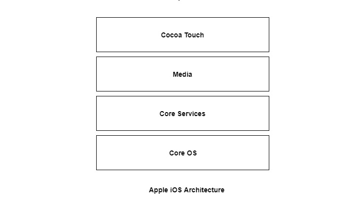

The iOS is the operating system created by Apple Inc. for mobile devices. The iOS is used in many of the mobile devices for Apple such as iPhone, iPod, iPad etc. The iOS is used a lot and only lags behind Android in terms of popularity. The iOS architecture is layered. It contains an intermediate layer between the applications and the hardware so they do not communicate directly. The lower layers in iOS provide the basic services and the higher layers provide the user interface and sophisticated graphics. The layered architecture of iOS is given as follows − 